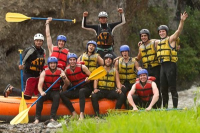

Founded in 2010, Volta River Adventures began as a small outfit guiding local adventurers along the Volta River. Our founders wanted visitors to experience Ghana's rivers with confidence, safety, and respect for the environment.

Over the years, our team has grown into one of the region's most trusted rafting companies, combining experienced guides, quality equipment, and a passion for outdoor adventure on every trip we lead.